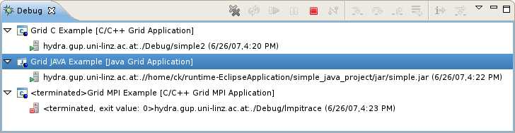
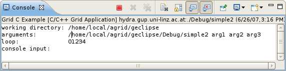

After setting up a launch configuration of one of the following types,
the application can be started and will be listed in the debug view.  It is possible to interact with the application via the console. 
Back to Launching and Debugging
Back to Getting Started